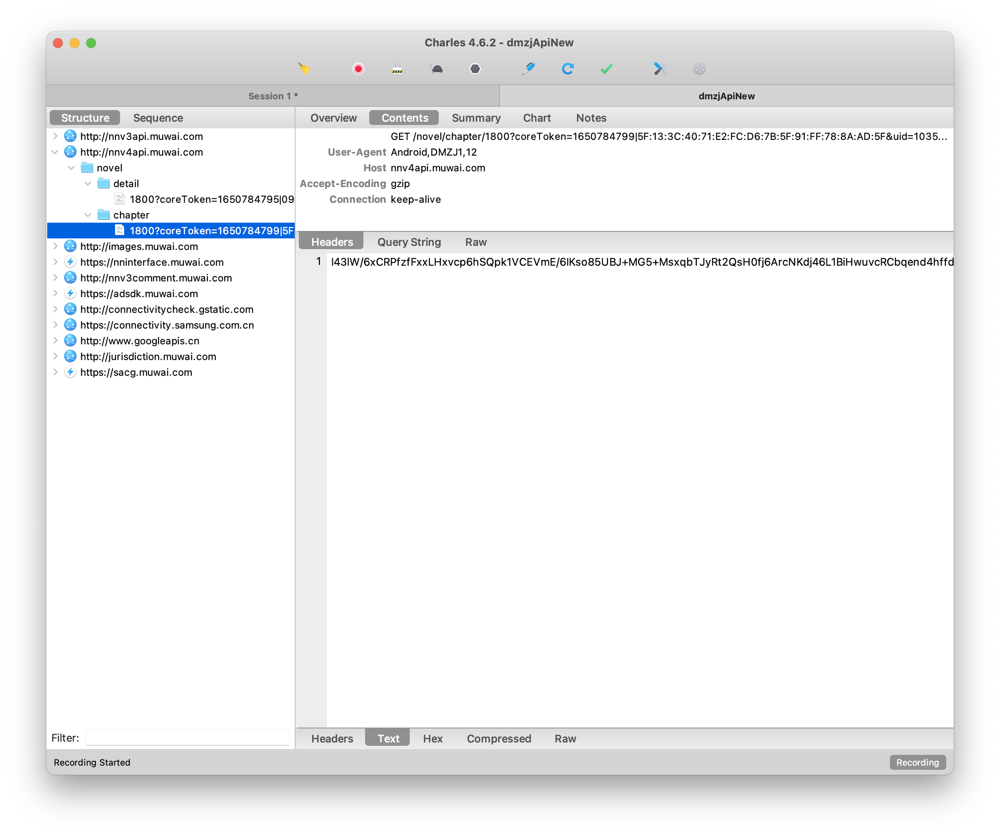
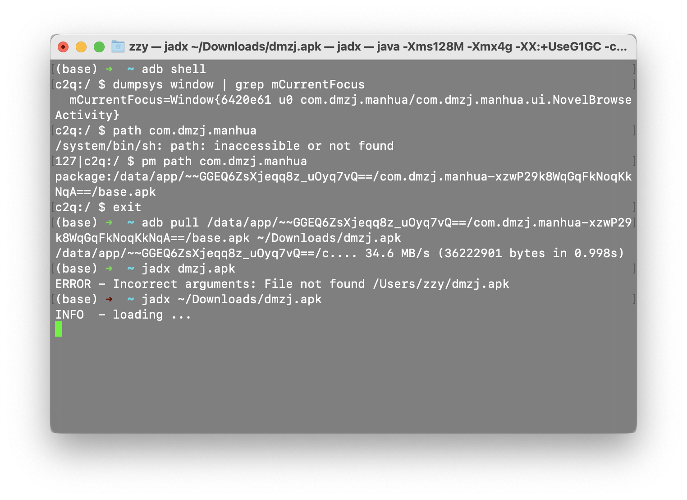
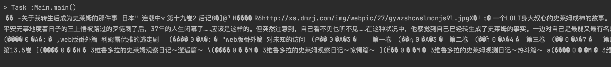
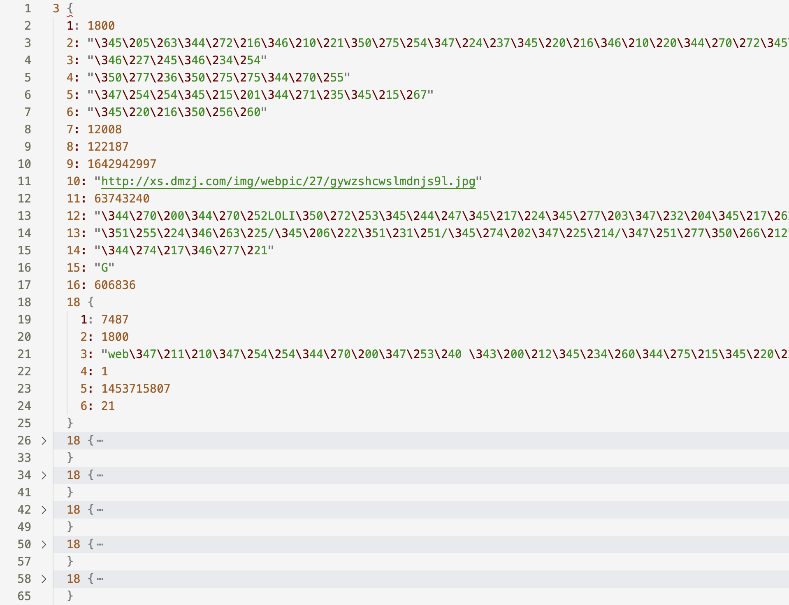
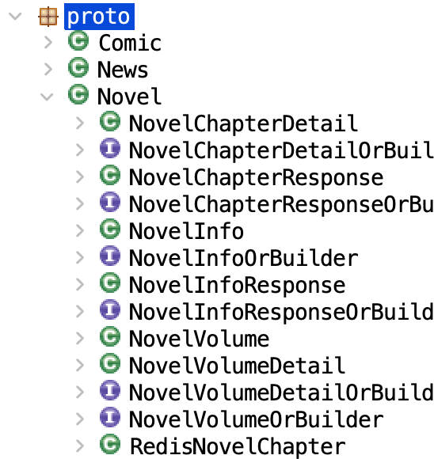
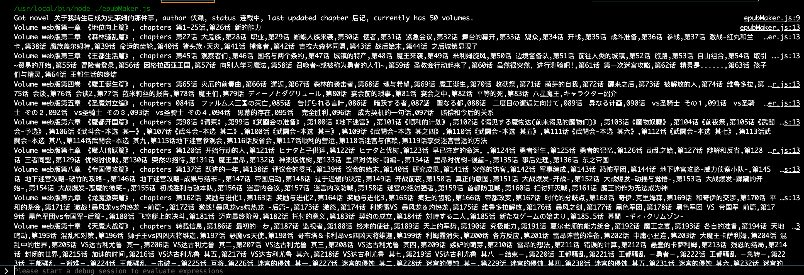
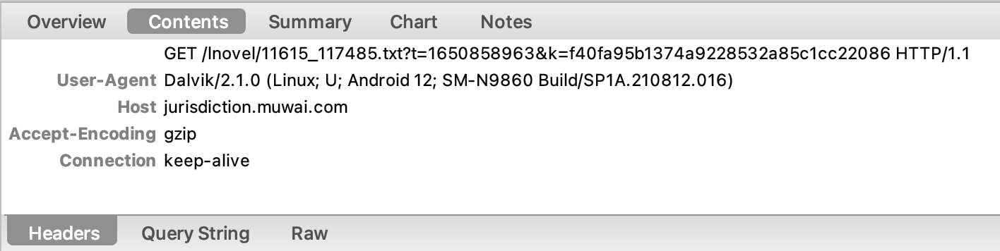
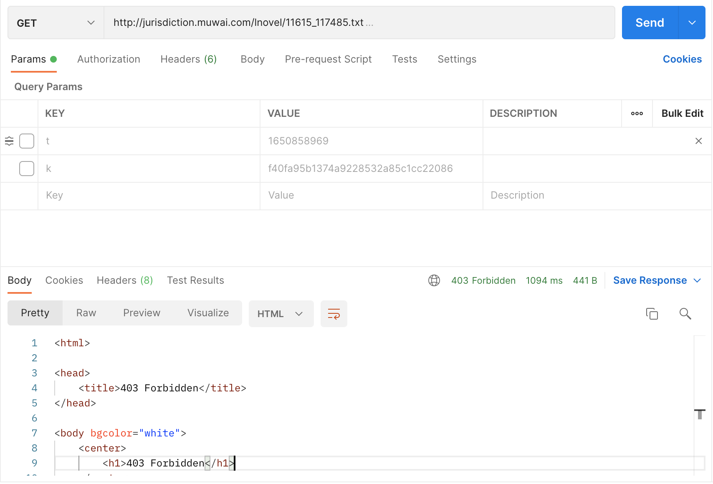
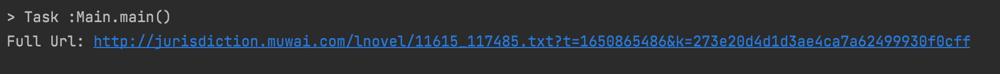

数据源 看大妈之家的客户端早就不爽了，不如欺负下这个没什么混淆的APK，把他们的API拿来自己玩, 借着复活我七年高龄的Kindle的想法，这次就来抓一个动漫之家轻小说源，做成电子书给它看（为啥不抓漫画呢？别问问就是今天世界读书日）。虽然动漫之家有不少汉化的轻小说资源，其移动端阅读体验却不敢恭维，而Web端满屏的广告也基本断绝了用Kindle那个又慢又卡的浏览器阅读的可能。原本的想法是在本地托管一个网页，通过DMZJ的API做出一个适合Kindle浏览器的静态阅读页（出于性能考虑，最好直接禁用Kindle浏览器的JavaScript）。于是我很快就想到，既然API都有了，不如直接扒下来做成电子书再发过去，岂不美哉？Anyway，万事开头难，只要拿到API，剩下的客户端、Web还是直接存本地都可以信手拈来。当然以我在Windows UWP端见证的几版DMZJ客户端消亡史来看，他们的API还是变动频繁的，不如直接存本地划算。
如前所述，至少在几年前，DMZJ的API就已经被人抓取了，因此出现了众多的基于第三方API的客户端，在GitHub上仍有2021年时可用的API。但不幸的是，现在抓包的结果表明之前的API已经过时，至少在漫画/小说章节部分，DMZJ的API已经引入了新的加密。

于是祭出jadx，直接反编译看它的小说详情页NovelInstructionActivity源码。我们可以看到小说的基本信息接口已经是加密的（拿到数据直接一个postDelayed加载到UI上真的大丈夫？）：
1 2 3 4 5 6 7 8 9 10 11 12 13 14 15 16 17 18 19 20 21 22 23 24 25 26 27 28 29 30 31 32 33 34 35 36 private void refresh (boolean z) this .mNovelProtocol.setPathParam(this .intent_extra_nid);this .mNovelProtocol);this .intent_extra_nid, new MyCallBack1(getActivity(), new MyCallBack1.B() {@Override public void onReceiveData (String str) this .scrollview.onRefreshComplete();try {byte [] decryptWithPrivateKeyBlock = RSAUtil.decryptWithPrivateKeyBlock(str);new JsonFormat();if (parseFrom.getErrno() == 0 ) {final String printToString = jsonFormat.printToString((Message) parseFrom.getDataOrBuilder());this .getDefaultHandler().postDelayed(new Runnable() {public void run () this .refreshBasicInfos(printToString);500 );else {this .getActivity(), parseFrom.getErrmsg());this .ltUnionADPlatform = BrowseAdHelper.setAd(NovelInstructionActivity.this .getActivity(), NovelInstructionActivity.this .layout_ad_layout, 2 );catch (Exception e) {@Override public void onReceiveError (String str, int i) this .scrollview.onRefreshComplete();
然后我们看它的RSAUtil，私钥就明文放着，你懂得。
简单调用一下，发现之前抓取的请求能被正常解码，内容应该是protobuf。
1 2 3 4 5 6 7 object DMZJDecrypter {fun run (ciphertext: String )

使用protoc --decode_raw < ~/Downloads/dmzj_resp.bin > ~/Downloads/dmzj_resp.txt解码，可以看到如下结构：

但我们还需要找到这些字段的含义，在apk中可以看到三个由protoc生成的ProtoBuf实体类：

比如，Novel类型对应着NovelChapter、NovelInfo、NovelVolume三种对象，其定义类似：
1 2 3 4 5 6 7 8 9 10 11 12 13 14 15 16 17 18 19 20 21 private NovelInfo () this .memoizedIsInitialized = -1 ;this .novelId_ = 0 ;this .name_ = "" ;this .zone_ = "" ;this .status_ = "" ;this .lastUpdateVolumeName_ = "" ;this .lastUpdateChapterName_ = "" ;this .lastUpdateVolumeId_ = 0 ;this .lastUpdateChapterId_ = 0 ;this .lastUpdateTime_ = 0 ;this .cover_ = "" ;this .hotHits_ = 0 ;this .introduction_ = "" ;this .types_ = LazyStringArrayList.EMPTY;this .authors_ = "" ;this .firstLetter_ = "" ;this .subscribeNum_ = 0 ;this .redisUpdateTime_ = 0 ;this .volume_ = Collections.emptyList();
显然这与protobuf的结构对应。至此我们终于可以使用新版的DMZJ API了。
以下是本人总结出的DMZJ轻小说的Protobuf IDL示例：
1 2 3 4 5 6 7 8 9 10 11 12 13 14 15 16 17 18 19 20 21 22 23 24 25 26 27 28 29 30 31 32 33 34 35 36 37 38 39 40 41 42 43 44 45 46 47 48 49 50 51 52 53 54 55 56 57 58 59 60 syntax = "proto2";
简单用protobuf.js解码后就可以得到我们想要的目录：

当然还有最后一步即获取对应章节的文本，这个接口需要用上一步得到的volumeId和chapterId与两个query t和k即可访问: http://jurisdiction.muwai.com/lnovel/${volumeId}_${chapterId}.txt。

顾名思义，t就是当前的时间戳，而k应该是根据时间戳生成的随机ID，更改其中任何一个，或者不上传都会被403。

反编译NovelBrowsActivity，可以看到章节刷新的逻辑：
1 2 3 4 5 6 7 8 9 final NovelDescription.Chapter chapter = this .novelChapters.get(z ? i - 1 : i + 1 );null , chapter.getChapter_name(), this .intent_extra_nid, chapter.getVolume_id(), chapter.getChapter_id(), new OnCommenCompleteListener() {@Override public void onComplete (Bundle bundle) false , z);
在loadChapterNovel方法中，我们可以看到拼接出最终URL的方法MyspUtils中, 这个只是个拿SahredPreference的工具，会从SahredPreference中拿对应URL的缓存地址，然后从本地加载：
1 2 3 4 5 6 7 8 9 10 11 12 public void loadChapterNovel (final ReadHistory4Novel readHistory4Novel, String str, String str2, String str3, String str4, final OnCommenCompleteListener onCommenCompleteListener, final boolean z, final boolean z2) int i = 0 ;new URLPathMaker(this .ctx, URLPathMaker.URL_ENUM.HttpUrlTypeNovelDownLoad).get_url(URLPathMaker.URL_ENUM.HttpUrlTypeNovelDownLoad, str3 + "_" + str4);"小说地址" , str5);this .ctx, str5);"str" , str6);if (ZzTool.isNoEmpty(str6) && onCommenCompleteListener != null ) {...}this .mNovelHelper.getLocalLocalFile(getActivity(), str2, str3, str4, new NovelHelper.OnLoadCompleteListener() {@Override public void onComplete (String str, String str2)
在没有命中缓存之后，会调用NovelHelper.getLocalLocalFile()方法（这个方法真的会执行下载，但名字就…编码习惯真好）。所以前面做出来的URL只是用来查询缓存用的，并未在这个方法中触发下载行为。
在NovelHelper中，我们终于看到计算两个query的部分，key即是一个混合了时间戳的MD5编码。
1 2 3 4 5 6 7 8 9 10 11 12 13 14 15 16 public static void goWebDownLoad (final StepActivity stepActivity, String str, final String str2, final OnLoadCompleteListener onLoadCompleteListener) if (!AppUtils.RELEASE) {"novel_goWebDownLoad" , "webpath = " + str);long currentTimeMillis = System.currentTimeMillis() / 1000 ;"" );new StringBuilder();"?t=" );"&k=" );"小说地址====" , sb2);
现在我们得到可用的query了。

制作电子书 不得不承认，DMZJ最近的API改版确实为获取数据带来了不少麻烦，幸好客户端APK混淆强度很低，通过反编译可以拿到其加密逻辑和接口详情。现在我们具有了完整的数据源，包括书籍信息（作者、封面、地区、tag等）、目录信息（卷、章节）和每章节对应的文本。
这里我使用了npm模块epub-gen来生成Epub电子书。由于Epub也适用HTML和CSS排版，只需要提供HTML章节文本和外置的CSS即可用以生成Epub。epub-gen 的使用相当简单，只需要指定一些选项，将分章节的对象列表作为内容构造出Epub对象即可完成电子书的生成。该模块也可以自动下载url中的图片作为封面。
从之前获取的数据结构中生成Epub电子书的代码如下：
1 2 3 4 5 6 7 8 9 10 11 12 13 14 15 16 17 18 19 20 21 22 23 24 25 26 var content = []vol =>title : vol.volumeName,data : "" for (let chap of vol.chapters) {title : chap.chapterName,data : `<div>${chap.text} /div` const options = {title : info.name,author : info.authors,cover : info.cover,lang : "zh" ,tocTitle : "目录" ,content : content,verbose : true await new Epub(options, path.join(workingDir, `${info.name} .epub` ))return book
一切都很完美……但epub-gen实际上并不支持多级目录，这意味着，我们得到的卷-章节两级的结构无法被生成到epub中……不过也不是什么大问题，首先有一些workaround，如在卷的data中插入空页，再放入其他章节；其次也可以直接修改epub-gen，这就不在本文讨论范围了。